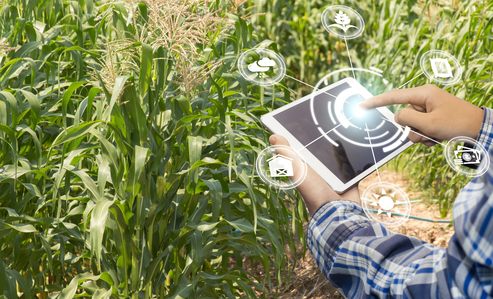

A tecnologia e a inovação têm desempenhado um papel crucial na transformação do setor agrícola. Com o advento de novas tecnologias, os agricultores estão agora equipados com ferramentas que podem aumentar a produtividade e a eficiência de suas operações.
Um exemplo disso é a agricultura de precisão. Esta abordagem utiliza tecnologias como GPS, sensores de solo e imagens de satélite para monitorar as condições do campo e otimizar o uso de recursos. Isso permite aos agricultores aplicar fertilizantes e água de forma mais eficiente, resultando em maior produtividade e sustentabilidade.
Outra inovação significativa é a automação. Tratores autônomos, drones e robôs estão sendo cada vez mais utilizados para realizar tarefas que antes exigiam mão de obra intensiva. Isso não só economiza tempo e esforço, mas também melhora a precisão e a consistência do trabalho realizado.
Além disso, a tecnologia de informação e comunicação (TIC) está facilitando a coleta e análise de dados em tempo real. Isso permite aos agricultores tomar decisões informadas e responder rapidamente às mudanças nas condições do campo.
Em resumo, a tecnologia e a inovação estão remodelando o campo, tornando a agricultura mais produtiva, eficiente e sustentável. À medida que continuamos a avançar, podemos esperar ver ainda mais melhorias que beneficiarão não apenas os agricultores, mas toda a sociedade.
